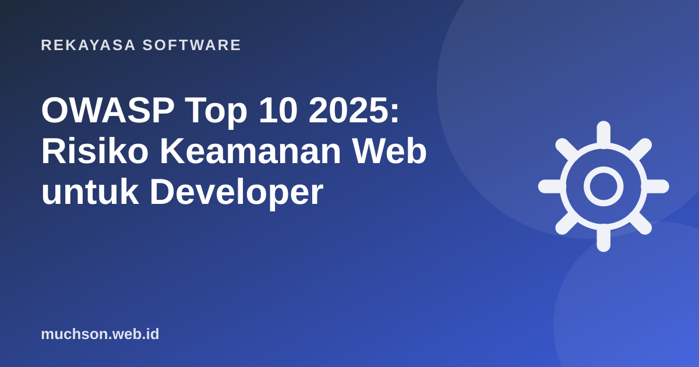

Beranda › Artikel › Rekayasa Software
Rekayasa SoftwareOWASP Top 10 2025: Risiko Keamanan Web untuk Developer
OWASP Top 10 adalah daftar risiko keamanan aplikasi web yang paling kritis, disusun komunitas OWASP dari data pengujian ribuan aplikasi dan survei praktisi. Edisi 2025 adalah edisi kedelapan dan membawa dua kategori baru. Berikut penjelasan setiap risiko dan apa yang bisa Anda lakukan di kode sehari-hari.

Daftar lengkap OWASP Top 10:2025
| No | Kategori | Inti masalah |
|---|---|---|
| A01 | Broken Access Control | Pengguna bisa melihat atau mengubah data yang bukan haknya. |
| A02 | Security Misconfiguration | Pengaturan default, debug menyala, izin cloud terlalu longgar. |
| A03 | Software Supply Chain Failures (baru) | Dependensi, build, atau pipeline yang tidak terjaga. |
| A04 | Cryptographic Failures | Data sensitif tidak dienkripsi atau memakai algoritma lemah. |
| A05 | Injection | Input pengguna dieksekusi sebagai perintah: SQL, XSS, command. |
| A06 | Insecure Design | Celah sejak rancangan, misalnya tidak ada batas percobaan OTP. |
| A07 | Authentication Failures | Login lemah, sesi tidak dikelola benar. |
| A08 | Software or Data Integrity Failures | Mempercayai kode atau data tanpa verifikasi. |
| A09 | Logging & Alerting Failures | Serangan terjadi tanpa tercatat atau tanpa ada yang diberi tahu. |
| A10 | Mishandling of Exceptional Conditions (baru) | Error ditangani salah sehingga sistem gagal secara tidak aman. |
Dibanding edisi 2021, SSRF tidak lagi menjadi kategori sendiri dan digabung ke Broken Access Control, sedangkan Security Misconfiguration naik ke posisi kedua.
A01: Broken Access Control, tetap nomor satu
Contoh klasik: URL /invoice/1043 menampilkan invoice. Pengguna mengganti angka menjadi 1044 dan melihat invoice orang lain. Ini disebut IDOR.
// Rentan: hanya mencari berdasarkan id
const invoice = await db.invoice.findUnique({ where: { id } });
// Aman: id DAN pemiliknya harus cocok
const invoice = await db.invoice.findFirst({
where: { id, userId: req.user.id },
});
if (!invoice) return res.status(404).end();- Tolak secara default; izinkan secara eksplisit.
- Periksa kepemilikan di server untuk setiap permintaan, bukan hanya menyembunyikan tombol di frontend.
- Gunakan policy atau middleware terpusat (misalnya Policy di Laravel).
A03: Supply chain, ancaman dari dependensi
Aplikasi modern berisi ratusan paket pihak ketiga. Satu paket yang dibajak atau typosquatting (nama mirip paket populer) bisa menyusupkan kode jahat.
- Commit lockfile dan pasang dengan
npm ciatau setara. - Aktifkan pemindai dependensi (Dependabot, npm audit, composer audit).
- Periksa paket baru sebelum dipasang: pengelola, jumlah unduhan, aktivitas.
- Batasi izin token CI dan pin versi action pihak ketiga.
A05: Injection
# Rentan SQL injection
cursor.execute(f"SELECT * FROM users WHERE email = '{email}'")
# input: ' OR '1'='1 → semua user terbaca
# Aman: parameterized query
cursor.execute("SELECT * FROM users WHERE email = %s", (email,))Untuk XSS, gunakan escaping otomatis dari framework (React, Vue, Blade sudah melakukannya) dan hindari innerHTML, v-html, atau {!! !!} untuk data dari pengguna.
A10: Salah menangani kondisi tak terduga
Kategori baru ini mencakup error yang ditangani sembarangan: menampilkan stack trace ke pengguna, transaksi yang setengah jalan saat error, atau logika "gagal terbuka" (fail open), misalnya pemeriksaan izin yang error lalu dianggap lolos.
// Gagal terbuka (berbahaya)
try { allowed = await checkPermission(user) } catch { allowed = true }
// Gagal tertutup (aman)
try { allowed = await checkPermission(user) } catch (e) {
logger.error(e); allowed = false;
}Cek cepat aplikasi Anda
Tanya jawab
Apakah OWASP Top 10 sebuah standar wajib?
Ada versi khusus untuk aplikasi AI?
Seberapa sering daftar ini diperbarui?
Sumber dan bacaan lanjut
- OWASP Top 10:2025 (situs resmi)
- OWASP Cheat Sheet: SQL Injection Prevention
- OWASP Application Security Verification Standard (ASVS)